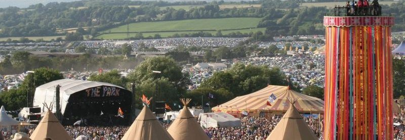
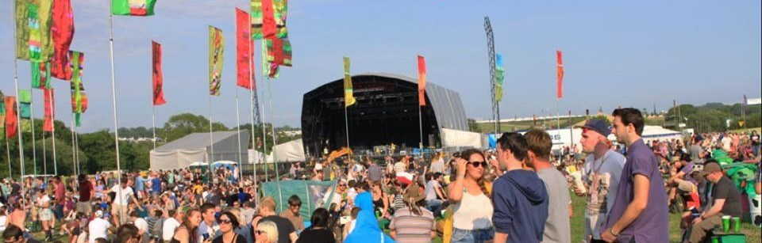
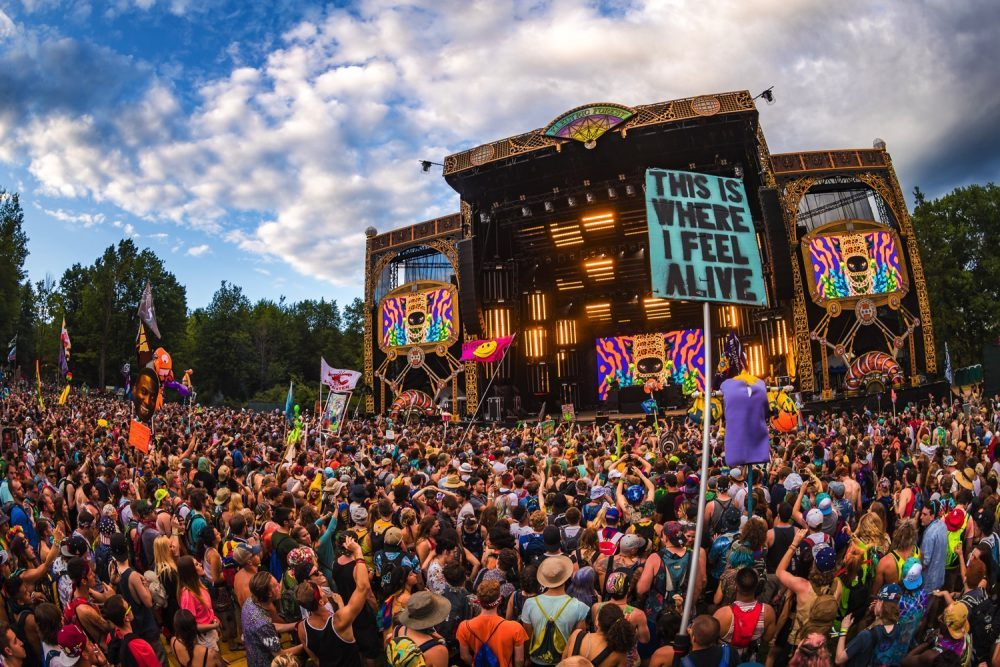

THE MAIN is the self explanatory, it is the heart of the festivals and where headliners will look to act and perform. Be her if you do not want to miss out. t can host crowds of anything from 10,000 to 100,000. Its the stage that gets the most media coverage. There are a lot of iconic headline performances.
THE PARK will host the biggest and best from the COOL DOWN stage. EDM or HOUSE, THE PARK has you covered. Get your game and rave on because this will be an experience of a life time 
The RISENSHINE area will have the best upcoming and brand new artist, new to the game. Dont be fooled tho, these are the greats that will become legendaries in the future.
Where the most hip and hop artist will be playing their banging music. Get ready to hit the woah and foax with these artist ready to spit some lyrics.